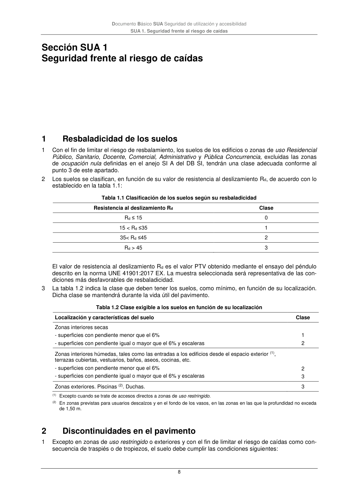

DB-SUA · Sección SUA 1 Seguridad frente al riesgo de caídas · 1 Resbaladicidad de los suelos · 2 Discontinuidades en el pavimento · versión 2022-06-14
SHA256: 3cfb5bbb135e8f02faebd8b844e03e8947994c18d4c9e675a7d2aa37d1cd5958 · página física 8 de 47 · métodos de encabezado
solo si están cotejados.
Formatos: Markdown · JSON de bloques · PDF p. 8 · imagen PNG
Documento Básico SUA Seguridad de utilización y accesibilidad SUA 1. Seguridad frente al riesgo de caídas 8 Sección SUA 1 Seguridad frente al riesgo de caídas 1 Resbaladicidad de los suelos 1 Con el fin de limitar el riesgo de resbalamiento, los suelos de los edificios o zonas de uso Residencial Público, Sanitario, Docente, Comercial, Administrativo y Pública Concurrencia, excluidas las zonas de ocupación nula definidas en el anejo SI A del DB SI, tendrán una clase adecuada conforme al punto 3 de este apartado. 2 Los suelos se clasifican, en función de su valor de resistencia al deslizamiento Rd, de acuerdo con lo establecido en la tabla 1.1: Tabla 1.1 Clasificación de los suelos según su resbaladicidad Resistencia al deslizamiento Rd Clase Rd ≤ 15 0 15 < Rd ≤35 1 35< Rd ≤45 2 Rd > 45 3 El valor de resistencia al deslizamiento Rd es el valor PTV obtenido mediante el ensayo del péndulo descrito en la norma UNE 41901:2017 EX. La muestra seleccionada será representativa de las con- diciones más desfavorables de resbaladicidad. 3 La tabla 1.2 indica la clase que deben tener los suelos, como mínimo, en función de su localización. Dicha clase se mantendrá durante la vida útil del pavimento. Tabla 1.2 Clase exigible a los suelos en función de su localización Localización y características del suelo Clase Zonas interiores secas - superficies con pendiente menor que el 6% - superficies con pendiente igual o mayor que el 6% y escaleras 1 2 Zonas interiores húmedas, tales como las entradas a los edificios desde el espacio exterior (1), terrazas cubiertas, vestuarios, baños, aseos, cocinas, etc. - superficies con pendiente menor que el 6% - superficies con pendiente igual o mayor que el 6% y escaleras 2 3 Zonas exteriores. Piscinas (2). Duchas. 3 (1) Excepto cuando se trate de accesos directos a zonas de uso restringido. (2) En zonas previstas para usuarios descalzos y en el fondo de los vasos, en las zonas en las que la profundidad no exceda de 1,50 m. 2 Discontinuidades en el pavimento 1 Excepto en zonas de uso restringido o exteriores y con el fin de limitar el riesgo de caídas como con- secuencia de traspiés o de tropiezos, el suelo debe cumplir las condiciones siguientes:
